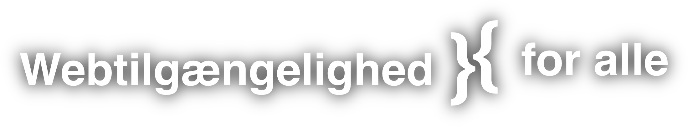
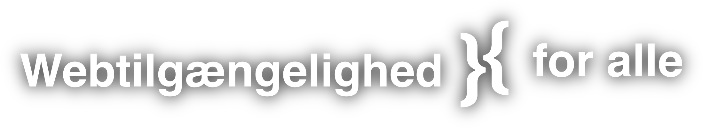
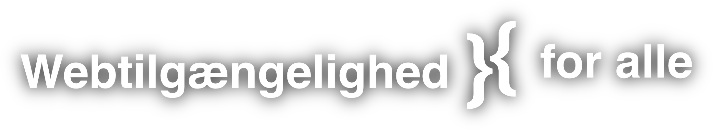
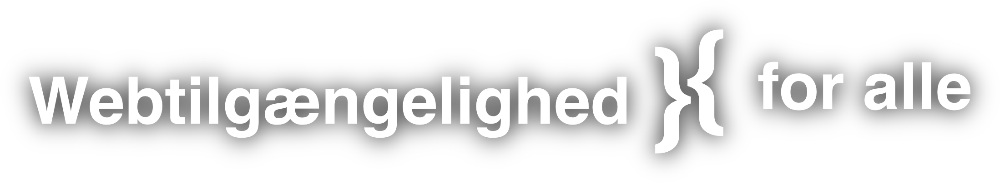

Webtilgængelighed handler om, at alle borgere uanset handicap eller funktionsnedsættelse kan benytte myndigheders og offentligretlige organers websteder og mobilapplikationer og deltage i samfundslivet på lige fod med andre borgere.